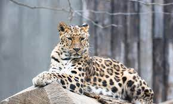

We are open Monday thru Sunday from 10am to 6pm. We are located in Brooklyn, New York. Our email is Mjannat@pokezoo.org. Our phone number is 724-886-2334
The African Forest Elephant, Amur Leopard, Black Rhino, Cross River Gorilla, Hawksbill Turtle, Orangutan, Saola, Sunda Tiger, Vaquita, African Wild Dog, Black-footed Ferret, Blue Whale, Giant Panda, Red Panda, Polar Bear, Hector's Dolphin, Lion, Sea Lion, Penguin, Koala, and the Artic Fox.
African forest elephants are the elusive cousin of the African savanna elephant. They inhabit the dense rainforests of west and central Africa. Their preference for dense forest habitat prohibits traditional counting methods such as visual identification. Their population is usually estimated through "dung counts"—an analysis on the ground of the density and distribution of the feces.African forest elephants are smaller than African savanna elephants, the other African elephant species. Their ears are more oval-shaped and their tusks are straighter and point downward (the tusks of savanna elephants curve outwards). There are also differences in the size and shape of the skull and skeleton. Forest elephants also have a much slower reproductive rate than savanna elephants, so they cannot bounce back from population declines as quickly at the same rate. Their last strongholds are located in Gabon and the Republic of Congo, with smaller populations remaining in other African countries (Cameroon, Central African Republic, Equatorial Guinea) and Côte d'Ivoire, Liberia, and Ghana in west Africa. African forest elephants live in family groups of up to 20 individuals and forage on leaves, grasses, seeds, fruit, and tree bark. Since the diet of forest elephants is dominated by fruit, they play a crucial role in dispersing many tree species, particularly the seeds of large trees which tend to have high carbon content. They are therefore referred to as the 'mega-gardener of the forest'. To supplement their diet with minerals, they gather at mineral-rich waterholes and mineral licks found throughout the forest.
People usually think of leopards in the savannas of Africa but in the Russian Far East, a rare subspecies has adapted to life in the temperate forests that make up the northern-most part of the species’ range. Similar to other leopards, the Amur leopard can run at speeds of up to 37 miles per hour. This incredible animal has been reported to leap more than 19 feet horizontally and up to 10 feet vertically. The Amur leopard is solitary. Nimble-footed and strong, it carries and hides unfinished kills so that they are not taken by other predators. It has been reported that some males stay with females after mating, and may even help with rearing the young. Several males sometimes follow and fight over a female. They live for 10-15 years, and in captivity up to 20 years. The Amur leopard is also known as the Far East leopard, the Manchurian leopard or the Korean leopard.
Among black and white rhinos, black rhinos are the smaller of the two African rhino species. Black and white rhinos can be distinguished by the shape of their lips. Black rhinos have hooked upper lips, whereas white rhinos are characterized by a square lip. Black rhinos are browsers, rather than grazers, meaning they are herbivores who do not feed on low-growing vegetation, and their pointed lip helps them feed on leaves from bushes and trees. They have two horns, which grow continually from the skin at their base throughout the rhino’s life (like human fingernails). The front horn is longer than the rear horn, averaging around 19 inches long. The population of black rhinos declined dramatically in the 20th century at the hands of European hunters and settlers. Between 1960 and 1995, black rhino numbers dropped by a sobering 98%, to less than 2,500 individuals. Since then, the species has made a tremendous comeback from the brink of extinction. Thanks to persistent conservation efforts across Africa, black rhino numbers have doubled from their historic low 20 years ago to more than 6,000 today. However, the black rhino is still considered critically endangered, and a lot of work remains to bring their population up to even a fraction of what it once was—and to ensure that it stays there. Wildlife crime—in this case, poaching of rhinos for the illegal international market for their horns—continues to plague the species and threaten its recovery.

Scientists have been unable to thoroughly study the distribution and abundance of the Cross River gorilla until the last decade or so. Because the gorillas are wary of humans and inhabit rugged territory, scientists have been unable to count many of these gorillas directly. Instead, researchers have used indirect signs, such as nest counts, and estimated range sizes to determine that there are only about 200 to 300 of these gorillas left in the wild. Cross River gorillas are scattered in at least 11 groups across the lowland montane forests and rainforests of Cameroon and Nigeria, an area of 3,000 square miles, or about twice the size of Rhode Island.This subspecies of the western gorilla is very similar in appearance to the more numerous western lowland gorilla, but subtle differences can be found in the skull and tooth dimensions. Cross River gorillas live in a region populated by many humans who have encroached upon the gorilla’s territory—clearing forests for timber and to create fields for agriculture and livestock. Poaching occurs in the forests as well, and the loss of even a few of these gorillas has a detrimental effect on such a small population.
Hawksbills are named for their narrow, pointed beak. They also have a distinctive pattern of overlapping scales on their shells that form a serrated-look on the edges. These colored and patterned shells make them highly-valuable and commonly sold as "tortoiseshell" in markets. Hawksbills are found mainly throughout the world's tropical oceans, predominantly in coral reefs. They feed mainly on sponges by using their narrow pointed beaks to extract them from crevices on the reef, but also eat sea anemones and jellyfish. Sea turtles are the living representatives of a group of reptiles that has existed on Earth and travelled our seas for the last 100 million years. They are a fundamental link in marine ecosystems and help maintain the health of coral reefs and sea grass beds.
The name orangutan means "man of the forest" in the Malay language. In the lowland forests in which they reside, orangutans live solitary existences. They feast on wild fruits like lychees, mangosteens, and figs, and slurp water from holes in trees. They make nests in trees of vegetation to sleep at night and rest during the day. Adult male orangutans can weigh up to 200 pounds. Flanged males have prominent cheek pads called flanges and a throat sac used to make loud verbalizations called long calls. An unflanged male looks like an adult female. In a biological phenomenon unique among primates, an unflanged male can change to a flanged male for reasons that are not yet fully understood. Bornean and Sumatran orangutans differ a little in appearance and behavior. While both have shaggy reddish fur, Sumatran orangutans have longer facial hair. Sumatran orangutans are reported to have closer social bonds than their Bornean cousins. Bornean orangutans are more likely to descend from the trees to move around on the ground. Both species have experienced sharp population declines. A century ago there were probably more than 230,000 orangutans in total, but the Bornean orangutan is now estimated at about 104,700 based on updated geographic range (Endangered) and the Sumatran about 7,500 (Critically Endangered. A third species of orangutan was announced in November, 2017. With no more than 800 individuals in existence, the Tapanuli orangutan is the most endangered of all great apes.
The saola was discovered in May 1992 during a joint survey carried out by the Ministry of Forestry of Vietnam and WWF in north-central Vietnam. The team found a skull with unusual long, straight horns in a hunter's home and knew it was something extraordinary. The find proved to be the first large mammal new to science in more than 50 years and one of the most spectacular zoological discoveries of the 20th century. Saola (pronounced: sow-la) are recognized by two parallel horns with sharp ends, which can reach 20 inches in length and are found on both males and females. Meaning “spindle horns” in Vietnamese, they are a cousin of cattle but resemble an antelope. Saola have striking white markings on the face and large maxillary glands on the muzzle, which could be used to mark territory or attract mates. They are found only in the Annamite Mountains of Vietnam and Laos.
Sunda tigers are distinguished by heavy black stripes on their orange coats. The last of the Sunda island tigers—estimated to be fewer than 400 today—are holding on for survival in the remaining patches of forest on the island of Sumatra. Accelerating deforestation and rampant poaching mean this noble creature could end up extinct like its Javan and Balinese counterparts. In Indonesia, anyone caught hunting tigers could face jail time and steep fines. But despite increased efforts in tiger conservation—including strengthening law enforcement and antipoaching capacity—a substantial market remains in Sumatra and other parts of Asia for tiger parts and products. Sunda tigers are losing their habitat and prey fast, and poaching is an ever-present threat.
Vaquita, the world's rarest marine mammal, is on the edge of extinction. The plight of cetaceans—whales, dolphins, and porpoises—as a whole is exemplified by the rapid decline of the vaquita in Mexico, with about 10 individuals remaining. This little porpoise wasn't discovered until 1958 and a little over half a century later, we are on the brink of losing them forever. Vaquita are often caught and drowned in gillnets used by illegal fishing operations in marine protected areas within Mexico's Gulf of California. The population has dropped drastically in the last few years. The vaquita has a large dark ring around its eyes and dark patches on its lips that form a thin line from the mouth to the pectoral fins. Its top—the dorsal surface—is dark gray, its sides are pale gray, and its underside—the ventral surface—is white with long, light gray markings. Newborn vaquita have darker coloration and a wide gray fringe of color that runs from the head to the flukes, passing through the dorsal and pectoral fins. They are most often found close to shore in the Gulf's shallow waters, although they quickly swim away if a boat approaches.
The wild dog is one of the world’s most endangered mammals. The largest populations remain in southern Africa and the southern part of East Africa (especially Tanzania and northern Mozambique). Wild dogs are social and gather in packs of around ten individuals, but some packs number more than 40. They are opportunistic predators that hunt medium-sized ruminants, such as gazelles. In a sprint, African wild dogs can reach speeds of more than 44 miles per hour.
Saving rare species from extinction requires extraordinary measures. The black-footed ferret is one of North America’s most endangered mammals. Once thought to be extinct, after the species was rediscovered in Wyoming in 1981, concerted efforts by numerous partners have given black-footed ferrets a second chance for survival. Captive breeding, reintroductions, habitat protection, and cloning have helped restore them to over 300 animals in the wild. Although great strides have been made to recover the black-footed ferret, habitat loss and disease remain their key threats. Biologists estimate that there should be 3,000 adult ferrets in the wild to successfully recover this endangered species.

The blue whale is the largest animal on the planet, weighing as much as 200 tons (approximately 33 elephants). The blue whale has a heart the size of a Volkswagen Beetle. Its stomach can hold one ton of krill and it needs to eat about four tons of krill each day. They are the loudest animals on Earth and are even louder than a jet engine. Their calls reach 188 decibels, while a jet reaches 140 decibels. Their low frequency whistle can be heard for hundreds of miles and is probably used to attract other blue whales.
Despite their exalted status and relative lack of natural predators, pandas are still at risk. Severe threats from humans have left just over 1,800 pandas in the wild.The panda, with its distinctive black and white coat, is adored by the world and considered a national treasure in China. This bear also has a special significance for WWF because it has been our logo since our founding in 1961.Pandas live mainly in temperate forests high in the mountains of southwest China, where they subsist almost entirely on bamboo. They must eat around 26 to 84 pounds of it every day, depending on what part of the bamboo they are eating. They use their enlarged wrist bones that function as opposable thumbs. A newborn panda is about the size of a stick of butter—about 1/900th the size of its mother—but females can grow up to about 200 pounds, while males can grow up to about 300 pounds as adults. These bears are excellent tree climbers despite their bulk. There are only 1,864 in the wild remaining.The biological diversity of the panda’s habitat is unparalleled in the temperate world and rivals that of tropical ecosystems, making the giant panda an excellent example of an umbrella species conferring protection on many other species where pandas live. In other words, when we protect pandas, we invariably protect other animals that live around them, such as multicolored pheasants, the golden monkey, takin, and crested ibis. Pandas also bring sustainable economic benefits to many local communities through ecotourism.
The red panda is slightly larger than a domestic cat with a bear-like body and thick russet fur. The belly and limbs are black, and there are white markings on the side of the head and above its small eyes. Red pandas are very skillful and acrobatic animals that predominantly stay in trees. Almost 50% of the red panda’s habitat is in the Eastern Himalayas. They use their long, bushy tails for balance and to cover themselves in winter, presumably for warmth. Primarily an herbivore, the name panda is said to come from the Nepali word ‘ponya,’ which means bamboo or plant eating animal. There are less than 10,000 remaining.Almost 50% of the red panda’s habitat is in the Eastern Himalayas. The loss of nesting trees and bamboo is causing a decline in red panda populations across much of their range because their forest home is being cleared.
The largest bear in the world and the Arctic's top predator, polar bears are a powerful symbol of the strength and endurance of the Arctic. The polar bear's Latin name, Ursus maritimus, means "sea bear." It's an apt name for this majestic species, which spends much of its life in, around, or on the ocean–predominantly on the sea ice. In the United States, Alaska is home to two polar bear subpopulations.Considered talented swimmers, polar bears can sustain a pace of six miles per hour by paddling with their front paws and holding their hind legs flat like a rudder. They have a thick layer of body fat and a water-repellent coat that insulates them from the cold air and water.Polar bears spend over 50% of their time hunting for food. A polar bear might catch only one or two out of 10 seals it hunts, depending on the time of year and other variables. Their diet mainly consists of ringed and bearded seals because they need large amounts of fat to survive.Polar bears rely heavily on sea ice for traveling, hunting, resting, mating and, in some areas, maternal dens. But because of ongoing and potential loss of their sea ice habitat resulting from climate change–the primary threat to polar bears Arctic-wide–polar bears were listed as a threatened species in the US under the Endangered Species Act in May 2008. As their sea ice habitat recedes earlier in the spring and forms later in the fall, polar bears are increasingly spending longer periods on land, where they are often attracted to areas where humans live. There are 22,000-31,000 left.Polar bears depend on sea ice for their existence and are directly impacted by climate change–serving as an important indicator species. By 2040, scientists predict that only a fringe of ice will remain in Northeast Canada and Northern Greenland when all other large areas of summer ice are gone. This "Last Ice Area" is likely to become important for polar bears and other life that depends on ice.
Hector’s dolphins are the smallest and rarest marine dolphins in the world. They have distinct black facial markings, short stocky bodies and a dorsal fin shaped like a Mickey Mouse ear. There is a subspecies of Hector’s dolphin known as Maui’s dolphin that is critically endangered and estimated to have a population of only 55. They are found only in the shallow coastal waters along western shores of New Zealand’s North Island. There are about 7000.Hector’s and Maui’s dolphins only live in New Zealand’s shallow coastal waters. They are both at risk of becoming extinct.Living close to shore is a problem for the dolphins. Bycatch—becoming tangled in recreational and commercial gill and trawl nets—is the biggest threat they face. Gillnets, for example, are made of a fine mesh that dolphins are unable to detect underwater and they accidentally swim into them and become caught. Other threats include being struck by boats, pollution in their habitat, coastal development and seabed mining.

Throughout history, lions have been admired as a symbol of power, strength, and courage. Previously, lions roamed throughout all of Africa and parts of Asia and Europe. However, this mighty species is now found only in fragments of sub-Saharan Africa, along with a critically endangered subpopulation in West Africa and a small population of Asiatic lions in India’s Gir National Park. Three of the five largest lion populations can be found in Tanzania.The vast majority of lions live south of the Sahara. Since lions are extremely adaptable big cats, they can survive in a wide variety of habitats, including dry forests, thick bush, floodplains, and semi-arid desert areas. However, they typically prefer open savannas where it is easier to stalk their prey.Compared to other big cat species, lions are the most sociable. They live in groups called prides, which can consist of anywhere from two to 30 members, including three or four males, a dozen or more females, and their offspring. Lionesses remain with the same pride for their entire lives. Male lions, on the other hand, leave after maturing to compete for control of another pride. Leading males defend their territory by marking it with urine and roaring to scare off intruders. A lion’s roar can be heard from five miles away and is also a show of power between males.Within their pride, female lions act as the primary hunters and work in teams to prey on zebras, wildebeests, antelope, and other large herbivores. Lions sleep up to 20 hours a day, so most of their hunting is done at night or early in the morning. This is because their eyes easily adapt to the dark, and it is easier to sneak up on prey at night.Along with hunting for the pride, female lions are responsible for raising their offspring. They typically give birth to a litter every two years, which consists of one to four cubs.The IUCN estimates that between 23,000 to 39,000 lions remain in the wild. However, other data from recent years suggests that that number may be closer to 20,000, as three-quarters of their population is in decline. Although lions are not currently endangered, population numbers will continue to decrease without proper conservation efforts.
Sea lions haul out in large colonies on rocks and sandy shores on the Islands. They move into the water to feed and cool off as needed.The sea lion is the most common mammal in the Galápagos.Introduced species, such as dogs, carry diseases that can spread to sea lions. They are vulnerable to the effects of climate change on ocean currents, which impacts their fish prey abundance. They are also victims of bycatch in fisheries.
Penguins are a family of 17 to 19 species of birds that live primarily in the Southern Hemisphere. They include the tiny blue penguins of Australia and New Zealand, the majestic emperor penguins of Antarctica and king penguins found on many sub- Antarctic islands, the endangered African penguin and the Galápagos penguin—the only penguin to be found north of the equator.Though they are birds, penguins have flippers instead of wings. They cannot fly and on land they waddle walking upright—though when snow conditions are right they will slide on their bellies. In the water they are expert swimmers and divers, and some species can reach speeds of up to 15 miles per hour. The penguin’s distinctive coloring—black body with white belly—helps camouflage the bird in the water as it searches for meals of small shrimp, fish, crabs and squid.Penguins may not be able to fly across the sky, but they can fly underwater as well as any fish. Instead of wings, these birds have flippers that can propel their streamlined bodies up to 15 miles per hour through the sea in pursuit of a meal.Climate change is a growing concern for penguins that live in Antarctica—the emperor penguin and the Adelie penguin. These species depend on sea ice for access to food and for places to breed. But the sea ice has been disappearing, and penguin populations along with it. A 2008 WWF study estimated that 50% of the emperor penguins and 75% of the Adelie penguins will likely decline or disappear if global average temperatures rise above pre-industrial levels by just 2 degrees C—a scenario that could be reached in less than 40 years.Commercial fishing in the Southern Ocean region can force many penguin species to compete for the fish they eat. The practice can also lead to accidental capture and drowning in fishing nets.
Well, like bears, koalas are mammals, and they have round, fuzzy ears and look cute and cuddly, like a teddy bear. But koalas are not bears. They are members of a group of pouched mammals called marsupials. Marsupials include kangaroos, wallabies, wallaroos, wombats, possums, and opossums. Koalas look soft, but their fur feels like the coarse wool of a sheep. They also seem cuddly, but koalas are not tame, and they don't make good pets.Koalas are native to southeastern and eastern Australia, living in forests of eucalypt trees. They need to sleep a lot to give them time to digest their food. Being on the ground all the time would be a disadvantage, because predators could catch them easily. Instead, they adapted to live way up in eucalypt trees, rear end firmly planted in the fork of branches, so they can chew leaves and nap all they want to without feeling threatened. Eucalypt forests are home, shelter, and food for koalas. Koalas are adapted for living in the crooks of branches: they have a reduced tail, a curved spine, and a rounded rear end. But they do travel on the ground when necessary, to get from tree to tree or to a new area. On hot days, koalas select the coolest trees and the coolest locations in those trees (against the trunk and other low, shaded branches) for resting. On cooler days, koalas are more likely to rest farther away from the trunk where they can absorb heat from the sun. Koalas have few natural predators, although sometimes a dingo or large owl can take one. The most common direct causes of koala deaths are from motor vehicles and dogs. Koalas are definitely safest high up in trees. Koala hands and feet are adapted for curling around and hanging onto tree branches very effectively. Their hands have two opposing thumbs to increase their grip (we only have one), and sharp claws to dig into bark. The feet have a toe that is really two toes fused together, which they use to groom themselves, and a toe that doesn’t have a claw that acts like a thumb for gripping. Rough, ridged pads on the hands and feet aid their grip and give them traction. Strong arm and shoulder muscles help a koala climb 150 feet (46 meters) to the top of a tree and enable it to leap between branches in the trees.Koalas are naturally solitary. They are most active at night and spend most of their time napping and eating. Koalas eat only eucalypt leaves. Eating leaves from one kind of plant may seem boring, but there are more than 600 different kinds of eucalypt trees, and from a koala’s point of view, each looks and tastes very different! Koalas prefer the leaves of about three dozen varieties.

The Arctic fox is primarily a carnivore that lives inland, away from the coasts. They are dependent on the presence of smaller animals (most often lemmings) to survive. Arctic foxes also hunt for sea birds, fish, and other marine life. Smaller rodent populations waver between times of abundance and scarcity, which leaves the Arctic fox vulnerable when these creatures are low in numbers. There are several hundred thousand remaining. The protection of the Arctic fox ensures the safety of a variety of other wildlife in the Arctic region. The scarcity of prey is the most prevalent threat for the Arctic fox. Disease and genetic pollution of the species by foxes bred in captivity also threatens this species. The Arctic fox was impacted tremendously by the fur trade because of its extremely high quality pelt. It's still hunted now for its fur, particularly by native populations who live in close proximity to them. The fur trade has decreased dramatically and the Arctic fox is not as vulnerable to overexploitation as it once was. Temperatures in the Arctic are rising at twice the rate of the rest of the world. Warming temperatures are linked to many changes in the Arctic, including reduced sea ice, melting permafrost and rising sea levels.